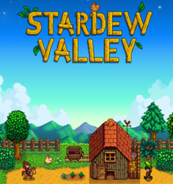

Stardew Valley adalah permainan peran video simulasi pertanian dan peternakan yang dikembangkan secara swadaya oleh Eric Barone.[1] Permainan video untuk Microsoft Windows, Mac, Linux, PlayStation 4, Xbox, Nintendo Switch, PlayStation Vita, Android, iOS. Permainan ini diluncurkan pada tanggal 26 Februari 2016.[2]
Pada permainan ini, pemain mendapatkan peran sebagai petani dan peternak di ladang hasil hibah harta warisan dari kakeknya yang terletak di sebuah kota kecil bernama Stardew Valley nan jauh dari hiruk pikuk kehidupan kota besar.[3] Pemain diharapkan untuk mengelola dengan baik alokasi waktu, sisa-sisa energi serta sumber daya dan tabungan uang yang telah disimpan dengan rapi, yang selanjutnya akan dipergunakan untuk membersihkan ladang, menanam dan merawat tanaman, mengurus hewan-hewan ternak, membuat perabotan dan furnitur yang diperlukan, menambang berbagai macam jenis batuan mineral serta aktif terlibat dalam rangkaian acara kegiatan sosial dengan para warga yang tinggal di sekitar wilayah Stardew Valley, termasuk juga untuk hal-hal yang berkaitan dengan aktivitas pernikahan.[4]
Pada permainan ini, pemain mendapatkan peran sebagai petani dan peternak di ladang hasil hibah harta warisan dari kakeknya yang terletak di sebuah kota kecil bernama Stardew Valley nan jauh dari hiruk pikuk kehidupan kota besar.[3] Pemain diharapkan untuk mengelola dengan baik alokasi waktu, sisa-sisa energi serta sumber daya dan tabungan uang yang telah disimpan dengan rapi, yang selanjutnya akan dipergunakan untuk membersihkan ladang, menanam dan merawat tanaman, mengurus hewan-hewan ternak, membuat perabotan dan furnitur yang diperlukan, menambang berbagai macam jenis batuan mineral serta aktif terlibat dalam rangkaian acara kegiatan sosial dengan para warga yang tinggal di sekitar wilayah Stardew Valley, termasuk juga untuk hal-hal yang berkaitan dengan aktivitas pernikahan.[4]
Pengembang Eric Barone banyak mengambil inspirasi dari serial permainan Harvest Moon bersama dengan kritik dan saran dari para pengembang dan pemain yang menyukai dan tertarik dengan permainan ini.[5] Di tengah-tengah proses pengembangan Stardew Valley yang hampir memakan waktu kurang lebih empat tahun, Chucklefish mengajukan sebuah penawaran yang cukup menarik yaitu mereka sebagai penerbit untuk permainan ini sehingga Eric Barone dapat lebih memfokuskan konsentrasi dalam menyelesaikan permainannya.[6] Tepatnya pada tahun 2018, Eric Barone pun memutuskan untuk menerbitkan permainan peran video Stardew Valley secara tunggal dibawah naungan perusahaan yang diciptakan olehnya, yaitu ConcernedApe.[7]
Stardew Valley diterima dengan sangat positif oleh para kritikus serta para pemain yang mencoba permainan tersebut dan telah menjadikannya sebagai salah satu dari permainan peran video yang paling banyak laku terjual di situs wahana permainan video Steam dengan mencetak angka penjualan yang sangat tinggi lebih dari perkiraan penjualan yaitu satu juta kopi, sebulan setelah permainan diluncurkan.[8]